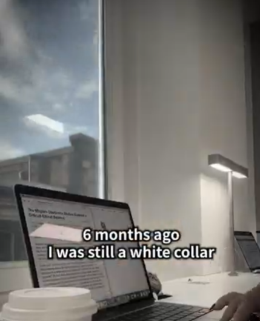

From Corporate Desk to Creative Freedom: Embracing Change for a Balanced Life

Taking a step toward a new path requires bravery, curiosity, and a belief in your own potential. Six months ago, Sarah was working in a traditional white-collar office environment, spending her days surrounded by spreadsheets, corporate deadlines, and desk-bound routines.
While the corporate world provided valuable structure and professional skills, Sarah felt a growing desire to explore her creative side and build a flexible lifestyle centered around her genuine passions.
1. Recognizing the Spark for Something New
Every transformation begins with a simple realization that you are capable of expanding your horizons. Transitioning from a structured desk job to a self-directed path offers several empowering moments:
Rediscovering Personal Passion: Reconnecting with creative hobbies—like digital content creation, writing, or consulting—that bring true enthusiasm to your day.
Designing Your Own Schedule: Gaining the ability to shape your workspace and daily timeline to suit your peak energy and well-being.
Building Self-Confidence: Realizing that your skills and dedication can open new doors outside traditional corporate boundaries.
2. Taking the Leap: "So I Decided to Try Lah!"
With an optimistic mindset and a clear plan, Sarah decided to take the plunge into freelance digital work. "I told myself, why not give it a shot? So I decided to try lah!" she shares with a warm, radiant smile from her bright home setup.
That decision brought a refreshing wave of energy into her daily routine. Working from a cozy home environment allowed her to connect directly with clients, share inspiring stories online, and enjoy a peaceful, balanced lifestyle.
“Stepping out of your comfort zone isn't about knowing every detail of the future; it's about having the courage to give your dreams a fair try.”
Six months later, Sarah looks back with gratitude. Her journey demonstrates that when you trust yourself and stay open to new possibilities, work can become a joy fully integrated with a happy life.
Summary
Embracing change and pursuing creative freedom can reinvigorate your professional life. By taking courageous steps toward your passion, you can construct a rewarding lifestyle filled with purpose, balance, and positivity.